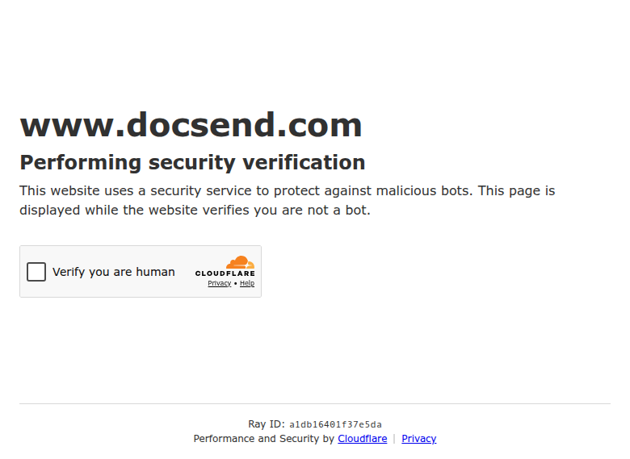

Profile
- Company
- DocSend
- Url
- https://www.docsend.com/
- Source Category
- NDA & deal-room tools
- Research Status
- Deep Cited Research / Draft Complete
- Current Status
- live but direct automated fetch still blocked (HTTP 403 Forbidden via WebFetch in this pass, consistent with prior pass's Cloudflare/bot-protection block). However, the product is confirmed ACTIVE and operating in 2026: search-indexed snippets from docsend.com/pricing/, docsend.com/blog/nda/, docsend.com/blog/virtual-data-room-for-startups/, and third-party review sites (Ellty, Orangedox, Papermark) all reference current, dated 2026 content, confirming the site is live for regular browsers and only blocking automated/headless fetchers.
- Founded Launch Year
- 2013
- Company Age
- ~13 years (as of 2026); ~5 years as a Dropbox-owned product
- Hq Country
- United States (San Francisco, CA)
- Operating Area
- Global (site offers Danish, German, English, Spanish, French, Italian, Dutch, Polish, Portuguese, Swedish, Chinese, Japanese, Korean language options per prior pass's evidence)
- Target Users
- Founders/startups raising capital, M&A dealmakers (sell-side), sales teams sending proposals - DocSend explicitly markets itself for 'Deals, Fundraising, and Compliance'
- Product Category
- Secure document sharing and analytics; virtual data rooms; NDA gating; pitch deck tracking - historically the most startup-fundraising-focused product in this batch
Product Flows
- Swipe Card Interface
- no - not found
- Mutual Match
- no - not applicable
- Ai Matching Scoring
- yes - buyer engagement scoring/analytics
- Ai Deck Scoring
- Partial - DocSend's core differentiator is page-by-page pitch-deck engagement analytics ('see which sections of a document were read, skipped, or revisited') and 'buyer engagement scoring,' which is adjacent to but not the same as AI-based deck CONTENT scoring (it scores viewer behavior/interest, not deck quality) - treat as 'partial / engagement scoring, not content scoring'
- Founder To Founder Flow
- Not a matching product. Closest equivalent: founder uploads pitch deck/documents -> creates a trackable link with password, expiry, and viewer whitelist controls -> shares link directly with a specific person or via email -> One-Click NDA can be attached so recipients must accept an NDA before viewing -> founder gets page-by-page analytics on who viewed what, for how long, and can instantly revoke access.
- Founder To Investor Flow
- This is DocSend's flagship use case: fundraising data rooms with built-in NDA gating and instant access revocation are explicitly marketed ('Advance M&A: identify serious buyers within the first few days... your edge: buyer engagement scoring, page-by-page analytics'); investor engagement (which pages viewed, time spent, forwarding) is tracked automatically, giving founders real-time signal on investor interest - functionally the closest 'deck scoring via engagement' analog to BizMatch's AI deck-scoring concept, though it is not an AI content evaluation.
- Project Profiles
- not found / no public source - no persistent discoverable project-profile/marketplace concept
- Messaging Collaboration
- yes - Q&A and sharing workflows
- Mobile App
- not found / no public source confirming a dedicated DocSend mobile app; likely accessible via mobile browser and potentially integrated into the Dropbox mobile app given the 2021 acquisition, but not independently confirmed in this pass
- Web App
- yes
Security & Documents
- Nda Gated Unlock
- yes
- Data Room
- yes
- E Signature
- yes
- Meeting Prep Ai Briefing
- no - not found
Pricing, Funding & Traction
- Pricing Model
- Tiered subscription (Personal/Standard/Advanced Data Rooms tiers); one third-party source cites an Advanced Data Room price point around $750/month ('DocSend Data Room: Is It Worth $750/Month?') - exact current published tiers not independently re-verified via direct fetch due to the 403 block
- Business Model
- B2B SaaS subscription, now operating as a product line within Dropbox's broader business/enterprise offering ('DocSend is part of Dropbox')
- Total Funding
- $15.3 million raised across 4 rounds prior to acquisition (per Crunchbase/Tracxn); acquired by Dropbox for $165 million in March 2021 (announced), deal covered extensively by TechCrunch and VentureBeat
- Funding Rounds
- 4 funding rounds, last on July 30, 2019, prior to the 2021 Dropbox acquisition
- Investors
- August Capital, DCM Ventures, Lerer Hippeau, and others (per Crunchbase)
- Funding Source Type
- VC-backed startup, subsequently acquired -> now a wholly owned product line of publicly traded Dropbox, Inc. (NASDAQ: DBX)
- Last Funding Date
- July 30, 2019 (last independent VC round); acquisition by Dropbox closed/announced March 9, 2021
- Users Traction
- Trusted by over 47,000 companies worldwide (per homepage claim, confirmed in prior pass's partial evidence); 4.6 rating referenced on homepage
- Deals Funding Facilitated
- not found / no public source with a specific aggregate dollar figure (unlike Digify/Ansarada, no headline 'total $ raised/facilitated' claim found)
- Partnerships
- Now part of the Dropbox product ecosystem (cross-sell/integration potential with Dropbox core storage and Dropbox Sign e-signature)
- Media Coverage
- Strong media coverage of the 2021 Dropbox acquisition (TechCrunch, VentureBeat, Deep Analysis, NewsBytesApp); DocSend's own blog is an active source of startup-fundraising content (e.g., 'How to set up a Virtual Data Room for M&A Due Diligence')
- Product Update Activity
- Active - blog content dated through 2026 (per search results referencing current-year articles), pricing page maintained, suggesting continued investment as a Dropbox product line
- Acquisition Rebrand History
- Acquired by Dropbox for $165 million, announced March 9, 2021 (TechCrunch, VentureBeat); operates as 'DocSend, part of Dropbox' - rebranded in some contexts as 'Dropbox DocSend' as of January 2022 per Crunchbase, though the standalone docsend.com brand/domain is still used publicly as of 2026
Scores
- Product Overlap Score
- 4
- Feature Maturity Score
- 4
- Market Traction Score
- 4
- Funding Strength Score
- 5
- Ai Depth Score
- 2
- Nda Security Strength Score
- 4
- Network Moat Score
- 3
- Direct Threat Score
- 3.7
- Source Confidence
- Medium (direct site fetch blocked; relied on search-engine cached snippets, third-party review sites, and prior-pass partial evidence rather than full first-party page fetch)
Evidence Notes
- Primary Sources
- https://www.docsend.com/
https://www.docsend.com/blog/nda/
https://www.docsend.com/pricing/
https://www.docsend.com/blog/virtual-data-room-for-startups/ - Secondary Sources
- https://techcrunch.com/2021/03/09/dropbox-to-acquire-secure-document-sharing-startup-docsend-for-165m/
https://venturebeat.com/business/dropbox-to-acquire-document-sharing-platform-docsend-for-165m
https://www.crunchbase.com/organization/docsend
https://www.ellty.com/blog/docsend-data-room
https://www.orangedox.com/blog/docsend-pricing-alternative - Unsupported Claims
- Exact current pricing figures and whether a dedicated mobile app exists could not be independently confirmed via direct site access due to persistent bot-blocking; relying on third-party secondary sources for these specific data points, flagged accordingly.
- Contradictions
- None found beyond the known access-blocking issue itself, which is a technical/scraping limitation, not evidence of product decline - DocSend's own blog and pricing pages are actively indexed with 2026-dated content, and the Dropbox parent company is a stable, public, well-capitalized owner.
- Last Checked
- 2026-07-19
- Notes
- DocSend is arguably the single most functionally similar tool in this batch to BizMatch's founder-investor deck-sharing/NDA-gate/engagement-tracking flow, given its startup-fundraising-first positioning (vs. Ansarada/Datasite's enterprise M&A focus or PandaDoc/Dropbox Sign's general e-signature focus). Direct-fetch access remains blocked by bot protection in this research pass exactly as flagged in the prior pass - this is a persistent technical obstacle, not a signal of the product being dead; corroborating evidence strongly indicates it remains an active, actively developed Dropbox product line.
Registration Flow
Research date: 2026-07-19. Screenshots are sanitized and omit any credentials or tokens.
Outcome: no account created. Automated registration was blocked by Cloudflare / HTTP 403 before the sign-up form could be reached.
Stop point: public homepage / bot-protection boundary; manual browser intervention would be required to continue.
- Opened the public DocSend site from the profile link.
- Looked for a founder/data-room registration path suitable for account creation research.
- Automation encountered DocSend's anti-bot boundary and could not proceed safely without bypassing Cloudflare.
